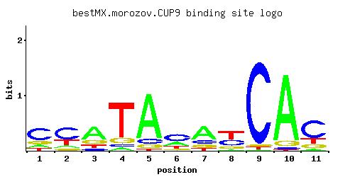

CUP9
YPL177C
Homeodomain-containing transcriptional repressor of PTR2, which encodes a major peptide transporter; imported peptides activate ubiquitin-dependent proteolysis, resulting in degradation of Cup9p and de-repression of PTR2 transcription
Best-performing DNA-binding model.

View and copy the recommended matrices ↘
A | 0.147 0.102 0.578 0.057 0.800 0.270 0.590 0.054 0.011 0.880 0.047 C | 0.579 0.567 0.097 0.064 0.096 0.485 0.164 0.339 0.939 0.030 0.622 G | 0.183 0.098 0.199 0.128 0.072 0.094 0.154 0.154 0.026 0.077 0.147 T | 0.090 0.233 0.126 0.751 0.032 0.150 0.093 0.453 0.024 0.012 0.183
A | 14 10 57 5 80 27 59 5 1 88 4 C | 57 56 9 6 9 48 16 33 93 3 62 G | 18 9 19 12 7 9 15 15 2 7 14 T | 9 23 12 75 3 15 9 45 2 1 18
A | -0.78 -1.14 0.59 -1.73 0.92 -0.17 0.61 -1.78 -3.37 1.01 -1.92 C | 1.17 1.15 -0.62 -1.03 -0.63 0.99 -0.09 0.63 1.65 -1.79 1.24 G | 0.02 -0.61 0.10 -0.34 -0.92 -0.65 -0.16 -0.16 -1.93 -0.85 -0.20 T | -1.27 -0.32 -0.93 0.85 -2.30 -0.76 -1.24 0.35 -2.59 -3.28 -0.56
Alternative candidate matrices 7
Historical matrix candidates from the original ScerTF database. Expand a source to inspect its original logo, scores, and matrix values.
CUP9Badis et. al.P = 0.04495View matrix ↘
CUP9Foat et. al.P = 1View matrix ↘
CUP9_AFordyce et. al.P = 0.2505View matrix ↘
CUP9_BFordyce et. al.P = 0.08992View matrix ↘
CUP9_CFordyce et. al.P = 0.1169View matrix ↘
CUP9Zhu et. al.P = 0.09878View matrix ↘
CUP9Zhao and StormoP = 1View matrix ↘
Gene-level annotations and interactions.
Genes bound in ChIP-chip experiments 86 genes
YAL064W, YBL029W, YBL043W, YBL074C, YBR291C, YBR300C, YCR024C-A, YDL027C, YDL037C, YDL129W, YDL130W, YDL245C, YDL246C, YDR042C, YDR064W, YDR077W, YDR098C, YDR143C, YDR259C, YDR343C, YDR441C, YDR442W, YEL040W, YEL047C, YEL069C, YEL070W, YER158C, YFL003C, YFR005C, YFR006W, YGL001C, YGL077C, YGL101W, YGL102C, YGL135W, YGL136C, YGR024C, YGR027C, YGR108W, YGR249W, YHL034C, YHR033W, YIL056W, YIL099W, YIL102C, YIL119C, YIL170W, YIL171W, YIL172C, YIR020C, YJL148W, YJL191W, YJL192C, YJL219W, YJL221C, YJR100C, YJR158W, YJR159W, YKL044W, YKL057C, YKR038C, YKR093W, YLR043C, YLR074C, YLR075W, YLR286C, YLR367W, YLR368W, YMR014W, YMR017W, YMR056C, YMR070W, YMR135C, YMR136W, YMR194W, YMR242C, YNL025C, YNL145W, YOL121C, YOR032C, YOR049C, YOR223W, YOR236W, YOR315W, YPL198W, YPR013C
Genes affected by TF deletion 534 genes
YBR002C, YBL090W, YCR012W, YCR040W, YER112W, YER178W, YGR280C, YGR282C, YHL016C, YIL148W, YJR020W, YJR087W, YKR012C, YMR010W, YML116W, YMR046W-A, YNL081C, YOR225W, YOR257W, YOR227W, YPL239W, YPL178W, YKL122C, YBR187W, YBR162C, YDL064W, YDL128W, YDL131W, YEL046C, YFR032C-A, YGL009C, YGR121C, YGR124W, YHR143W, YHR174W, YHR115C, YLR025W, YLR056W, YLR088W, YLR058C, YLR062C, YLR432W, YLR434C, YLR406C, YMR193W, YMR194W, YNL211C, YOR002W, YOR067C, YOR006C, YOR071C, YBR001C, YBR031W, YCR013C, YDR063W, YDR397C, YER117W, YER146W, YGR279C, YJR086W, YKR042W, YKR013W, YLR275W, YLR249W, YMR015C, YNL080C, YOL011W, YOR252W, YOR192C, YOR194C, YOR226C, YOR258W, YPL177C, YCR097W-A, YAL069W, YBR220C, YDL061C, YGR122C-A, YGR157W, YHR143W-A, YHR147C, YJL052W, YJL118W, YLR089C, YLR061W, YLR435W, YMR221C, YMR193C-A, YMR225C, YNL244C, YPL048W, YOR380W, YPR138C, YCR082W, YDR096W, YDR158W, YDR160W, YGR005C, YHR081W, YHR053C, YHR025W, YHR055C, YIR034C, YJR143C, YJR116W, YJR147W, YLR340W, YLR372W, YLR374C, YMR071C, YNL147W, YNL149C, YOL140W, YOR285W, YOR287C, YOR321W, YOR351C, YPR016C, YPL270W, YPR050C, YPR020W, YPL036W, YPL187W, YAR068W, YBL027W, YBL059W, YBR283C, YBR253W, YCL017C, YDR339C, YER086W, YER030W, YGL103W, YGL077C, YGR180C, YHR208W, YIL016W, YKL137W, YKL172W, YML056C, YML085C, YML029W, YMR312W, YMR286W, YMR256C, YNL307C, YPL142C, YPL144W, YPL146C, YHR183W, YCR077C, YDR461W, YGR030C, YGR034W, YHR021C, YJR117W, YLR339C, YMR074C, YNL110C, YNL176C, YNL146W, YOL105C, YOL077W-A, YOL109W, YOR286W, YPL271W, YAR062W, YBL026W, YCL018W, YBR256C, YDL191W, YDR338C, YDR281C, YER052C, YGL070C, YGL102C, YGR181W, YGR215W, YGR185C, YIL015W, YHR211W, YIL019W, YJL148W, YKL199C, YKL169C, YLR153C, YLR185W, YLR187W, YML024W, YML055W, YML026C, YML057W, YML086C, YNL300W, YNL306W, YPL143W, YPL145C, YER042W, YDR012W, YDR072C, YDR378C, YGL242C, YIL088C, YIL090W, YJR094W-A, YLR286C, YLR287C-A, YML123C, YNL030W, YOL019W, YOR265W, YAL043C, YDL133C-A, YDL136W, YDR224C, YER002W, YHR121W, YHR123W, YHR188C, YJL121C, YJL093C, YKL053C-A, YLR066W, YLR098C, YLR068W, YLR439W, YMR230W, YNL215W, YNL279W, YNL219C, YNL283C, YOR009W, YOR011W, YOR045W, YBR009C, YDR071C, YDR077W, YDR373W, YER154W, YIL153W, YIL123W, YJR023C, YKR084C, YNL055C, YNL057W, YOL020W, YOR234C, YPL246C, YPL184C, YAL010C, YAL040C, YAL012W, YAL016W, YBR162W-A, YBR196C, YDL135C, YDL075W, YDR261C, YER005W, YJL122W, YKL081W, YLR034C, YOR014W, YOR078W, YOR384W, YOR390W, YFL017C, YGR037C, YJR151C, YLL009C, YLR344W, YLR378C, YLR348C, YNL155W, YOL144W, YOL086C, YOR293W, YOR327C, YOR357C, YPR054W, YBL003C, YGR254W, YJL159W, YKL178C, YMR260C, YNR037C, YPL124W, YHR199C, YJL062W, YDR105C, YDR139C, YDR471W, YHR032W, YIR004W, YJR121W, YLR343W, YLR379W, YMR081C, YMR112C, YNL150W, YOL143C, YPL279C, YJL130C, YLL023C, YNR043W, YBL028C, YBL030C, YBL032W, YBR262C, YGR189C, YHR214W-A, YHR216W, YIL027C, YJL188C, YJL158C, YKL175W, YKL146W, YKL177W, YML030W, YML094W, YML095C-A, YMR323W, YNL308C, YCR023C, YDR086C, YDR450W, YER131W, YGL189C, YHL026C, YHR010W, YIL162W, YKR057W, YLR262C-A, YOL058W, YOR239W, YPL221W, YPL225W, YBR171W, YDR232W, YDR234W, YGR140W, YHR190W, YKL060C, YLR040C, YLR044C, YLR420W, YNL259C, YOR081C, YOR021C, YOR085W, YPL037C, YBL098W, YCL066W, YCR053W, YDR447C, YDR385W, YDR387C, YHR005C-A, YIL127C, YJR063W, YLR262C, YLR292C, YML126C, YNL066W, YOL030W, YOL061W, YOR270C, YOR210W, YAL022C, YDL141W, YDL081C, YDL113C, YDR205W, YEL031W, YGL028C, YHR189W, YKL057C, YKL120W, YKL063C, YLR041W, YLR043C, YML009C, YMR203W, YMR205C, YOR020C, YOR084W, YBR084C-A, YCR097W, YDR510W, YFL026W, YHR072W-A, YJL036W, YKL001C, YKL003C, YKL033W-A, YLL050C, YLR354C, YLR388W, YOL122C, YOR302W, YOR304C-A, YOR305W, YPR062W, YDL208W, YDR322C-A, YDR294C, YDR357C, YER043C, YGL087C, YGL089C, YGL093W, YGR260W, YLR198C, YLR170C, YNL321W, YBR145W, YDL045W-A, YDR115W, YLL018C, YLR325C, YMR116C, YNL190W, YNL162W, YOL155C, YOR303W, YPL281C, YBR268W, YCL035C, YDL173W, YGR259C, YJL196C, YJR004C, YJL166W, YKL216W, YKL156W, YLR167W, YMR303C, YNR042W, YNR013C, YNR044W, YNL322C, YBL107C, YDR056C, YDR454C, YDR396W, YGL191W, YGL225W, YIL138C, YLR303W, YMR006C, YOR277C, YOR247W, YOR283W, YPL262W, YAL033W, YER019C-A, YER022W, YGL031C, YGR148C, YHR136C, YHR141C, YJL079C, YKL099C, YMR245W, YMR188C, YNL263C, YPL076W, YPR159W, YBR053C, YCR028C-A, YCR003W, YKR094C, YLR237W, YLR300W, YLR302C, YNL070W, YOR276W, YOR248W, YBR244W, YGL032C, YGR118W, YJL136C, YJL140W, YKL069W, YLR051C, YLR083C, YLR421C, YMR215W, YNL268W, YPL071C, YBR090C, YFL034C-A, YFL067W, YFL037W, YFR001W, YGR027C, YJR135W-A, YKL008C, YLR332W, YLR334C, YMR158C-B, YOR369C, YPR074C, YPR044C, YBL082C, YCL009C, YDL184C, YDR002W, YER048C, YIL008W, YKL164C, YKL196C, YML108W, YNR055C, YPL170W, YHR047C, YKL004W, YKL006C-A, YLR022C, YLR390W-A, YLR333C, YOL127W, YOL159C, YOR312C, YPR073C, YPR043W, YBL018C, YER048W-A, YGR209C, YIL069C, YKL160W, YLR147C, YML081C-A, YOR182C
Genes supported by both experiments 9 genes
YDR077W, YGL077C, YGL102C, YGR027C, YJL148W, YKL057C, YLR043C, YLR286C, YMR194W